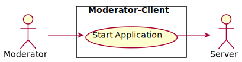
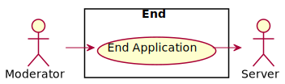

Use-case diagrams
PlayerAudience-Client

Via the PlayerAudience-Client, the individual participant, as part of the audience, has the possibility to vote on the decisions that occur in the game. The PlayerAudience-Client also acts as an actor for the server.
Server

Server receives the respective decisions from the PlayerAudience-Client, collects and evaluates them in relation to the number of votes. The server also acts as an actor for the Moderator-Client.
Moderator-Client
Start Application

The moderator is responsible for starting the application. From the main menu the moderator can change settings or close the application directly. The moderator can establish a connection to the server to play the game with online polling or the moderator can start the game in Offline-Mode.
Play Game

If there is a connection to the server, the server is gathering data from the audience and telling the Moderator-Client what is to be done depending on the data collected and the moderator can pause the game. If there is no connection, the moderator plays the game.
End Application

The moderator is responsible for ending the application. If the application is closed, the session with the server is also terminated.